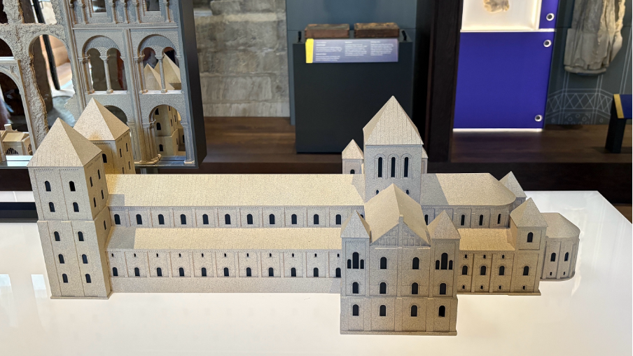
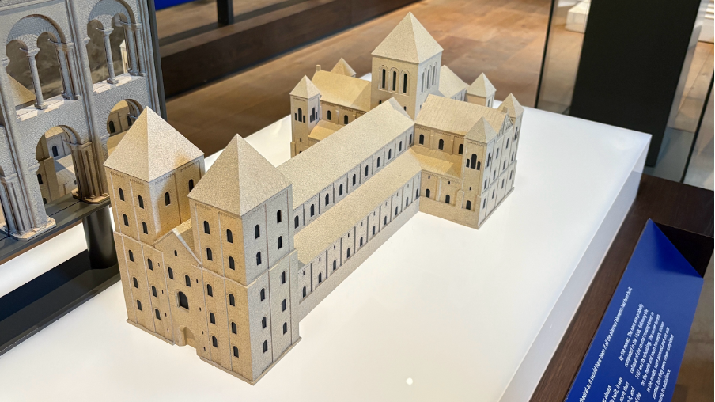
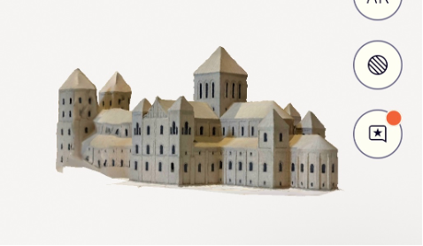
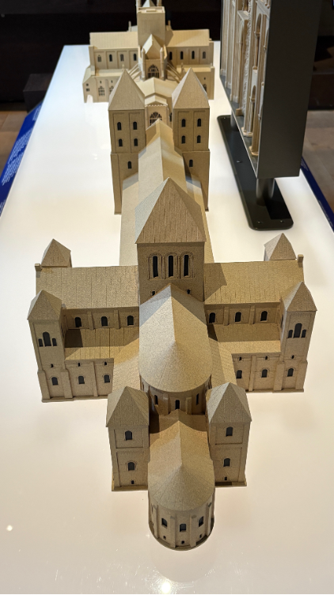
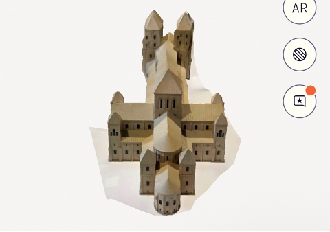

This week, I visited Winchester Cathedral and noticed a small architectural model of Chester Cathedral in the exhibition. The exhibit simulates a reconstruction of its historical appearance, offering my first visual experience of how past architectural forms are physically restored as models in the present.


Seeing the model immediately sparked an idea: What if this history could be “overlaid” onto the real cathedral through augmented reality (AR) technology? It might enhance the spatial memory experience, merging historical and contemporary perspectives in real time.
To capture this inspiration, I immediately used Polycam to 3D scan the model. The resulting 3D model clearly preserves the architectural structure and proportional relationships, making it ideal for later digital modeling and narrative integration. I tried scanning from different angles—side, top-down, and diagonal—to fill geometric gaps, enhancing the model’s completeness and realism in AR scenarios.



This was my first attempt to transform cultural heritage exhibits into creative materials, realizing that exhibitions aren’t just endpoints for viewing, but can also be starting points for digital storytelling.
Inspired by this experience, I hope to incorporate the scanned model into my ongoing “AR Chester Cathedral” project, with specific concepts as follows:
- Users point their phone cameras at the existing Chester Cathedral.
- After the system identifies the positioning coordinates, it automatically overlays a transparent historical architectural outline.
- Interactive buttons or gestures can be added to switch between past and present comparison views.
- Sound or annotations can even be incorporated to narrate the cathedral’s original layout and structure.
This isn’t just information presentation, but a spatial narrative that enhances memory reintroducing demolished, damaged, or altered parts of the reality back to the audience’s view.
Reflection
This experience means more to me than just a scanning exercise, deeply revealing that:
- Spatial narrative isn’t about reconstruction but guiding users to imagine a vanished reality.
- The combination of historical models and modern AR is an effective way to visualize culture.
- Tools like Polycam and LiDAR can serve as creative starting points for rapid spatial resource collection.
- With simple models, we can add an “emotional historical dimension” to future AR works.